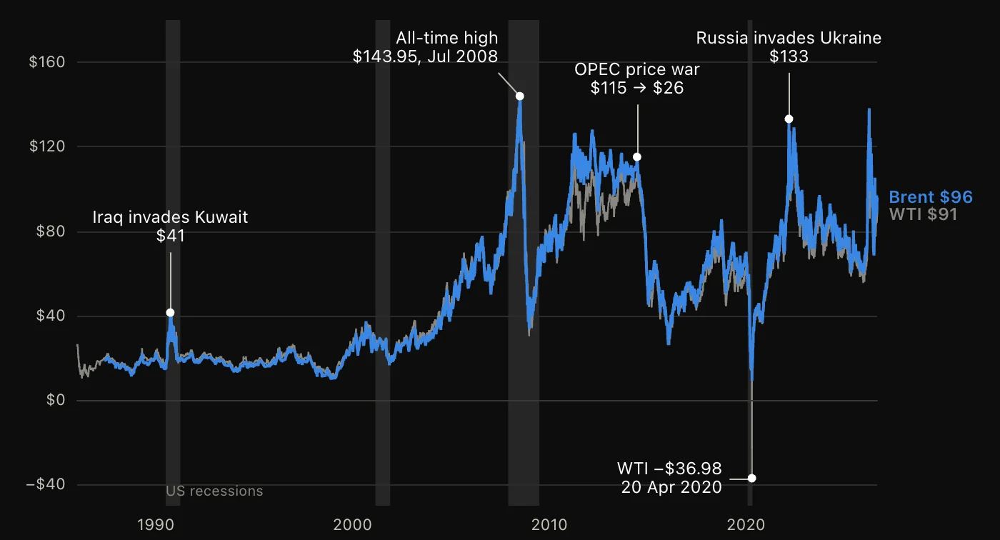

Which JavaScript line‑charts library?
We built the same three line charts in seven libraries, from real data: forty years of oil prices, Britain's electricity grid every half hour since 2009, and weekly npm downloads for 22 charting libraries. We timed them, measured their size and picked one for each job.
7 libraries 3 charts on real data up to 1.25 million points Nov 2026


What to use
It depends what the chart is for. A pick and a runner-up for each job.
| The job | Use | Runner-up | Why |
|---|---|---|---|
| An interactive chartA dashboard or an app. Zoom, tooltips, a million points, many series. | Apache EChartsApache-2.0, canvas or SVG | Plotly.js: zoom and callouts in config, but 1.5 MB, and slow hover on big data until tuned. | Met all three tests, mostly with options. 1.25 million points in about 100 ms, with zoom and a slider built in. 368 KB. |
| A chart in an articleA report, a blog post, a data story. Static and annotated. | Observable PlotISC, SVG | D3, when you need what Plot can't do. | 44 lines for the oil chart, the fewest. Renders to static SVG in Node, which is how DataHub uses it. No zoom or pan. |
| Huge data, small pageSpeed and size are all that matter. | µPlotMIT, canvas | D3 drawing to canvas. | 1.25 million points in about 25 ms, 23 KB. No callouts, and you write wheel zoom and pan yourself. |
| A custom chartThe chart is the product. | D3 | Did everything, all by hand: 1.3 to 2.6 times Plot's code. |
For DataHub we chose Plot for data stories and ECharts for interactive charts. Why we did this · The full verdict
The seven, side by side
Ranked for DataHub. Stars and downloads say how safe a bet it is; size and render time, what it costs your page; done for you and code, how much work it is.
| # | Library | Stars · downloadsGitHub · npm, a week | Sizegzipped, as loaded | 1.25M pointsfirst paint · what it draws | Done for youof 11 requirements | Codelines, 3 charts | Best for |
|---|---|---|---|---|---|---|---|
| 1 | Apache ECharts | 68k · 10.5M | 368 KB | 103 ms · every point, min–max sampled | 9 | 185 | One library for everything |
| 2 | Observable Plot | 5k · 1.6M | 190 KB | 431 ms · a daily mean and low–high band | 5½ | 159 | Charts in articles |
| 3 | D3 | 114k · 33.6M | 118 KB | 69 ms · every point, on canvas | 1 | 260 | Custom charts |
| 4 | Plotly.js | 18k · 0.9M | 1,480 KB | 696 ms · every point, WebGL; slow hover until tuned | 6½ | 180 | Callouts and zoom as config |
| 5 | µPlot | 11k · 1.0M | 23 KB | 24 ms · every point, min–max | 4 | 256 | Speed and size |
| 6 | Chart.js | 68k · 16.6M | 122 KB | 86 ms · every point, min–max decimation | 5 | 233 | Keep it if you have it |
| 7 | Vega-Lite | 6k · 2.2M | 283 KB | 219 ms · a daily mean and low–high band | 7½ | 191 | JSON specs, small data |
- Why this order. We weighed what each library does itself, interaction on the dense chart, keeping the true peaks in dense data, how the result looks, then size. Chart.js does more for you than µPlot but sits below it: it needs five extra scripts, draws to canvas only and had the most small traps. Vega-Lite does a lot for you but took 0.9 s per zoom step on hourly data. The full reasoning
- Done for you counts the requirements of our three tests that the library met with an option or a mark, not code we wrote. Every call
- Stars and downloads: stars on 21 November 2026; npm downloads for the week of 9 November, main package only (Plotly's prebuilt packages add about 1.1M; D3's count includes installs as a dependency). Timings: medians of six warm runs, render only (library download and data parsing excluded), MacBook Air M4, Chrome, 900 × 700. Sizes: the full builds a CDN tag loads, not a tuned app bundle. Method
Why the picks differ
Libraries that do more for you tend to draw big data more slowly. ECharts does the most and is still fast.
Out of the box, and styled
The same oil data in all seven. Out of the box is what you get on day one. Styled, they look alike because we made them alike; the Code column above shows how many lines that took.
The dense grid chart, npm downloads and a missing-data test, in all seven: all the charts.
Try it: 1.25 million points
Britain's electricity generation every half hour since 2009, four series. The buttons show our measured median; the chart times itself in your browser.
What we learned
- Only ECharts lays out end-of-line labels. The other six needed the same helper to stop labels overlapping.
- How a library thins dense data changes the chart. A daily average shows a solar peak of 5,444 MW; keeping each pixel's high and low shows the true 16,289.
- Plotly draws 1.25M points in 0.7 s, then hovers at about one frame a second, until you set one option (
hoverdistance). - Vega-Lite's zoom is one line, but it doesn't scale. 17.8 s at full resolution, and 0.9 s per zoom step even at hourly.
- No library fills a gap you didn't mark. Our builds break the line at an explicit null (D3 needs
.defined()), and all seven draw straight across a missing row.
How we tested
- We have compared charting libraries for DataHub for about a decade; this is the 2026 round.
- One written brief, the same data and the same page shell for all seven.
- Timings and sizes come from scripts in the repo; the source is under every chart. Method · Build notes · Why we did this
Questions
Why not Highcharts, Recharts, ApexCharts or Nivo?
Highcharts isn't free for commercial use; everything here is permissive open source. Recharts, Nivo and visx are React wrappers, and this site has no framework. ApexCharts, Chartist, Frappe and billboard.js weren't tested.
I use React. Does this apply?
Yes: all seven mount in a React component the way they mount here. React-only libraries are a separate comparison.
SVG or canvas?
Plot and D3 draw SVG (D3 also draws canvas, and does for the grid). Vega-Lite and ECharts can do either. Plotly draws SVG, and WebGL for big data. Chart.js and µPlot are canvas only. SVG text can be selected and read by screen readers; canvas needs extra work for that.